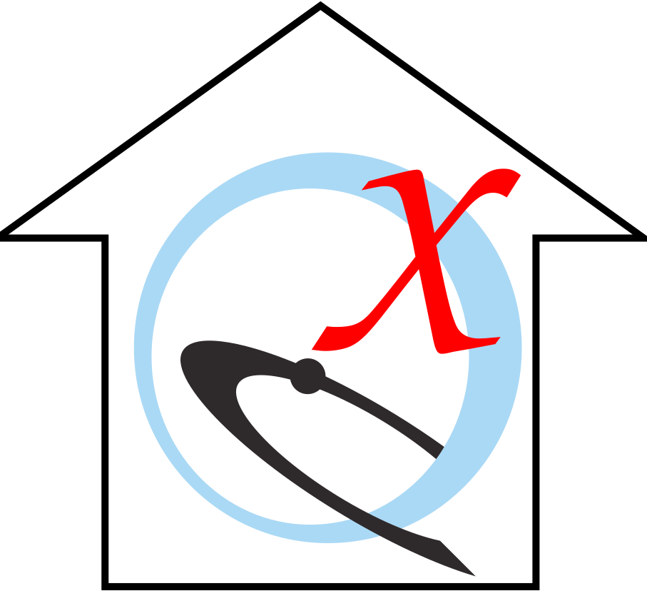

 UCSF ChimeraX User Guide
UCSF ChimeraX User Guide
UCSF ChimeraX
is the successor program to
UCSF Chimera.
In ChimeraX, menu: Help... User Guide shows this page in the
ChimeraX browser.
-
General
-
Tools
-
Commands
- Usage Conventions
- 2dlabels
– add text, symbols,
and straight arrows to the display for presentation images and movies
- addh
– add hydrogens
- alias
– define a command alias (shortcut or composite action)
- align
– superimpose sets of atoms
- alphafold
– get protein structures predicted by
AlphaFold
artificial intelligence
- altlocs
– list and manage atomic alternate locations
- angle
– set or report bond angles
- blastprotein
– search for similar protein sequences
- bond
– add or delete covalent bonds
- build
– build and modify atomic structures
- bumps
– identify and mark isosurface protrusions
- buttonpanel
– define a simple custom interface of buttons to execute commands
- camera
– set mono or stereo viewing and related parameters
- cartoon or ribbon
– create cartoons, adjust parameters and
styles
- cd
– change the working directory
- changechains
– change chain IDs
- clashes, contacts
– identify interatomic clashes or contacts
- clip
– control clipping planes
- close
– close models or session
- cofr
– report or adjust center of rotation
- color, rainbow
– color atoms/bonds, cartoons, surfaces
- combine
– combine or copy atomic models
- coordset
– play through frames of a trajectory
- coulombic
– calculate Coulombic electrostatic potential (ESP), color surfaces
- crossfade
– interpolate between image frames
- crosslinks
– analyze crosslinks or other pseudobonds
by length, etc.
- crystalcontacts
– identify close contacts between symmetry-related copies
- define
– define axis, centroid, or plane for a set of atoms
- delete
– delete atoms, bonds, pseudobonds
- device – enable
virtual reality or modes for other devices (webcam,
Space Navigator®, etc.)
- distance
– monitor atom-atom distances
- dssp
– define secondary structure of proteins using atomic coordinates
- exit or quit
– exit from ChimeraX
- fitmap
– fit atoms or map into map
- fly
– smoothly traverse a series of named views
- functionkey
– assign commands to function keys
- getcrd
– report atomic coordinates
- graphics
– set background color, triangulation fineness, frame rate,
outline appearance, etc.
- hbonds
– identify hydrogen bonds
- help
– show command help in the ChimeraX browser
- hkcage
– create a cage of hexagons and pentagons
to represent an icosahedral virus capsid
- info
– report model and other information to the user or to other programs
- interfaces
– draw chain-chain network diagram based on interface surface areas
- key
– draw a color key
- label
– label atoms, residues, bonds, pseudobonds
- lighting
– report or adjust lights and shadows
- log
– clear, save to file, and other actions related to the
Log
- marker
– create, change, delete
markers and links
- matchmaker or mmaker
– superimpose proteins or nucleic acids, guided by sequence alignment
- material
– report or adjust material properties for light reflection
and shadowing
- measure
– measure surface area, enclosed volume, center, path length,
map statistics, etc.
- meeting
– connect separate instances of ChimeraX for shared
virtual reality or collaborative modeling
- mlp
– calculate molecular lipophilicity potential (MLP) for proteins,
color surfaces
- modeller
– comparative modeling, loop modeling, and model evaluation with
Modeller
- molmap
– create a density map from atomic coordinates
- morph
– morph (interpolate) between atomic structures; create a morph trajectory
- mousemode
– report or adjust mouse button assignments
- move
– translate
- movie
– record image frames and assemble them into a movie file
- mseries
– display an ordered series of models
- name
– assign a name to a selection
or longer target
specification for subsequent easy use
- nucleotides
– show special representations of nucleic acids
- open
– read data from local file,
URL, or
database fetch
- palette list
– list predefined palettes for coloring
sequentially or by map value
- perframe
– specify operations to execute at every (or every Nth)
display frame
- preset
– apply a predefined combination of display settings
- pwd
– report the working directory
- registration status
– report ChimeraX registration status or days of use
- remotecontrol
– allow sending commands to ChimeraX using REST or XML-RPC
- rename
– change model name and/or ID number
- renumber
– renumber residues
- resfit
– show density fit of successive amino acid residues along a chain
- rmsd
– measure RMSD between sets of atoms without fitting
- rna
– build rough but potentially large-scale models of RNA
- rock
– rock back and forth
- roll
– rotate continuously
- runscript
– run Python or ChimeraX command scripts with command-line arguments
- save
– save image, session, map, coordinates, sequences,
or other data to a file
- scalebar
– draw a scale bar
- segger
– act on segmentations created with
Segment Map
- segmentation
– show an existing segmentation as surfaces or with coloring
- select
– select items (models or their parts) for subsequent operations
- sequence
– show the sequence of a structure chain,
manage sequence associations and headers, align sequences
- set
– set background color, subdivision level
- setattr
– general attribute-setting
- shape
– create a surface of a specified geometric shape
- show, hide
– show/hide atoms, bonds, cartoons, models
- size
– set atom radii and stick thickness
- smoothlines
– smooth paths in line models
- split
– partition an atomic model into submodels
- stop
– halt ongoing motions
- struts
– add pseudobonds
to a molecule to strengthen it for 3D printing
- style
– set display style of atoms, bonds,
and pseudobonds
- surface
– create and show/hide molecular surfaces
- swapaa
– virtual mutation (change amino acid type)
- sym
– build multimers using assembly information
- tile
– spread models out into a plane
- toolshed
– install/update ChimeraX bundles from the
Toolshed
(web repository)
- torsion
– set or report torsion angles (rotate bonds)
- transparency
– adjust transparency of atoms/bonds, cartoons, surfaces
- tug
– pull a set of atoms to target locations using
OpenMM dynamics
- turn
– rotate
- ui
– set tool-interface preferences, show/hide graphical interfaces,
assign functions to buttons
- undo, redo
– undo and redo a limited set of actions/commands
- unitcell
– build crystallographic unit cells
- usage
– show a brief description of command syntax and options
- version
– report ChimeraX version
- view
– focus the view on specified items, save/restore named views,
set camera and model positions with matrices
- volume
– display or process volume data
(density maps, etc.)
- vr
– virtual reality mode and related options
- vseries
– display, analyze, or process an ordered sequence of maps
- wait
– update the display and enforce ordered execution of commands in scripts
- windowsize
– set pixel width and height of the graphics window
- wobble
– perform a figure-eight rotation
- zone
– show atoms, labels, density within a zone around a residue
- zoom
– change the apparent size of the view
UCSF ChimeraX documentation is copyrighted © by the
Regents of the University of California, 2015-2022.
All rights reserved.